Graph Automorphism with Actual Graph
In this page, I use one fixed graph all the way through so that the notation in McKay and Piperno’s discussion of colourings, group actions, automorphisms, and canonical forms never drifts too far from an actual picture. I write the page in my own working voice, because I expect to revise the exposition later.
I fix the prism graph $$P=C_6\square K_2,\qquad V(P)=\{1,2,\dots,12\}.$$ I write the edge set explicitly as $$E(P)=\{\{1,2\},\{2,3\},\{3,4\},\{4,5\},\{5,6\},\{6,1\},\{7,8\},\{8,9\},\{9,10\},\{10,11\},\{11,12\},\{12,7\},\{1,7\},\{2,8\},\{3,9\},\{4,10\},\{5,11\},\{6,12\}\}. $$ So the graph has $12$ vertices, $18$ edges, and degree sequence $$ (3,3,3,3,3,3,3,3,3,3,3,3). $$
I also keep the adjacency list nearby: $$\begin{aligned} 1&: \{2,6,7\}, & 2&: \{1,3,8\}, & 3&: \{2,4,9\}, & 4&: \{3,5,10\},\\ 5&: \{4,6,11\}, & 6&: \{1,5,12\}, & 7&: \{1,8,12\}, & 8&: \{2,7,9\},\\ 9&: \{3,8,10\}, & 10&: \{4,9,11\}, & 11&: \{5,10,12\}, & 12&: \{6,7,11\}. \end{aligned}$$ For the uncoloured graph I use the generators $$\rho=(1\;2\;3\;4\;5\;6)(7\;8\;9\;10\;11\;12),$$ $$\tau=(2\;6)(3\;5)(8\;12)(9\;11),$$ $$\sigma=(1\;7)(2\;8)(3\;9)(4\;10)(5\;11)(6\;12),$$ so that $$\mathrm{Aut}(P)=\langle \rho,\tau,\sigma\rangle,\qquad |\mathrm{Aut}(P)|=24.$$
automorphism_demo_pngs/ stores the paired PNGs for each section.How I am reading the paper here
I treat each blue box as a short paper-guided sentence idea rather than as a long verbatim quotation. Then I explain the idea using the same 12-vertex graph, with the algebraic form placed in parallel with the images.
- The graph view PNG repeats the relevant algebra directly inside the figure.
- The automorphism/partition PNG gathers the relevant symmetries or ordered cells into one place.
- The repeated algebra is deliberate: I want the page to feel like a working notebook, not just a gallery.
Contents
- 1. Formal definitions come first
- 2. Why the search tree matters
- 3. A self-contained strategy section
- 4. The ambient set of graphs
- 5. What a colouring is
- 6. The number of colours
- 7. What a cell is
- 8. Discrete colourings
- 9. Discrete colouring as a permutation
- 10. Finer than or equal to
- 11. Subset intuition for finer colourings
- 12. Why colourings are also partitions
- 13. Why colour order still matters
- 14. What a coloured graph is
- 15. The symmetric group
- 16. Exponent notation for actions
- 17. Image of a vertex under a permutation
- 18. Induced action on more complicated objects
- 19. Action on subsets
- 20. Action on graphs
- 21. Discrete colouring gives G^π
- 22. Action on colourings
- 23. Action on coloured graphs
- 24. Isomorphism of coloured graphs
- 25. What the isomorphism itself is
- 26. Automorphism group
- 27. Canonical form
- 28. Unique representative of the class
- 29. Why canonical forms solve comparison
Sentence-by-sentence working notes
1. Formal definitions come first
I start with one concrete graph so that every later definition has an actual object attached to it. My running graph is the 12-vertex prism graph, and I return to it in every section.
$$P=C_6 \square K_2,\qquad V=\{1,2,\dots,12\},\qquad E=\{\{1,2\},\{2,3\},\dots,\{6,12\}\}.$$
$$P=C_6\square K_2,\qquad |V(P)|=12,\qquad |E(P)|=18,\qquad \deg(v)=3\text{ for all }v.$$
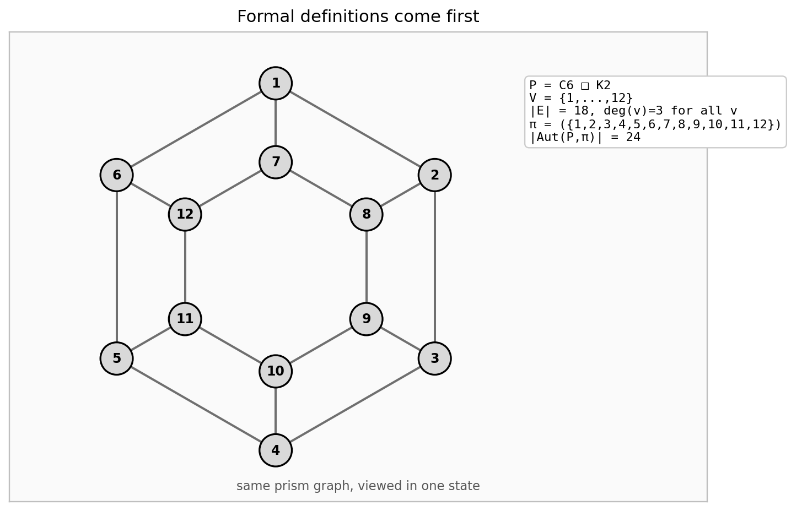
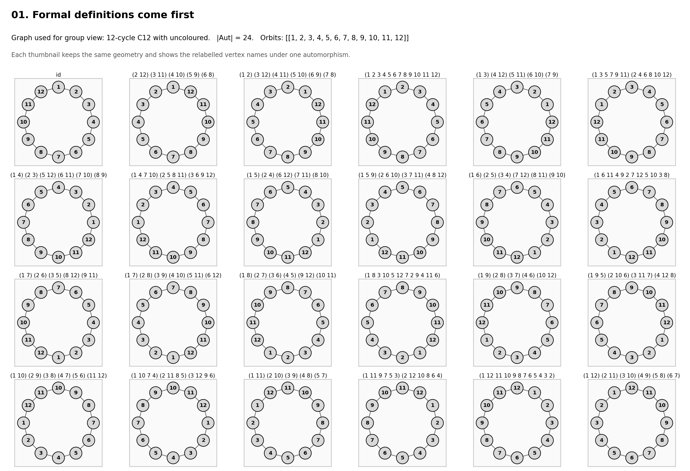
2. Why the search tree matters
Here I picture the search tree as repeated refinement: I split one cell, refine, and keep going until the colouring becomes rigid enough to compare branches or record automorphisms.
$$\pi_0=(V),\qquad \pi_1=(\{1\},V\setminus\{1\}),\qquad \pi_{\mathrm{disc}}=(\{1\},\{2\},\dots,\{12\}).$$
$$P=C_6\square K_2,\qquad |V(P)|=12,\qquad |E(P)|=18,\qquad \deg(v)=3\text{ for all }v.$$
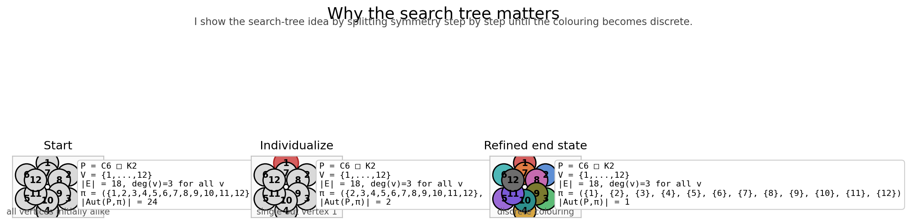
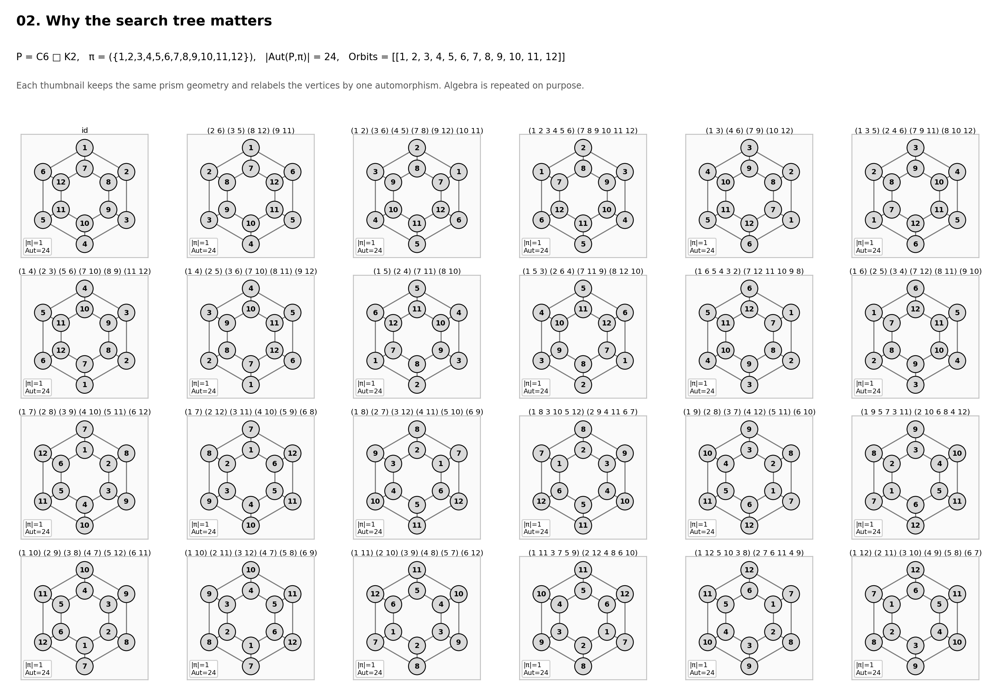
3. A self-contained strategy section
I read this part of the paper as a strategy map: start with a graph, impose an ordered colouring, refine it, and use the refined states to compute automorphisms and canonical forms.
$$G \longrightarrow (G,\pi) \longrightarrow \text{refinement/search tree} \longrightarrow \text{Aut}(G,\pi) \text{ and } C(G,\pi).$$
$$P=C_6\square K_2,\qquad |V(P)|=12,\qquad |E(P)|=18,\qquad \deg(v)=3\text{ for all }v.$$
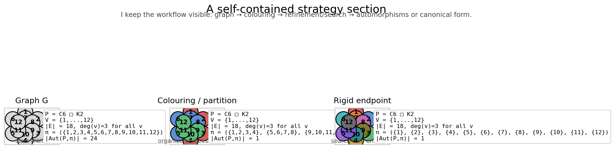
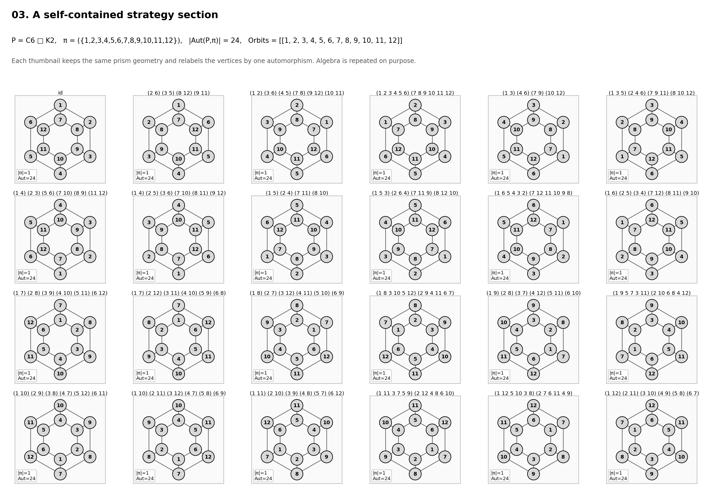
4. The ambient set of graphs
The paper writes $\mathcal G_n$ for all graphs on $V=\{1,2,\dots,n\}$. In my example I keep $n=12$ fixed and work inside that universe throughout.
$$\mathcal G_{12}=\{G: V(G)=\{1,2,\dots,12\}\}.$$
$$P=C_6\square K_2,\qquad |V(P)|=12,\qquad |E(P)|=18,\qquad \deg(v)=3\text{ for all }v.$$
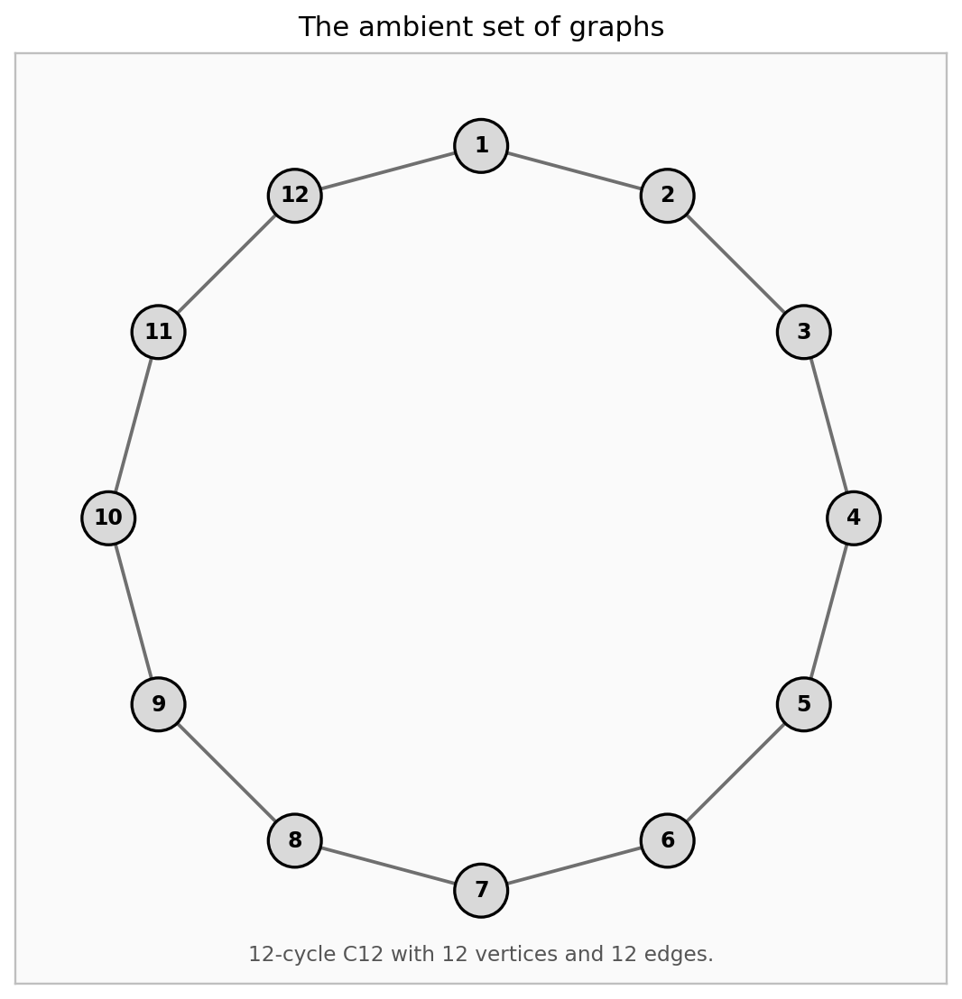
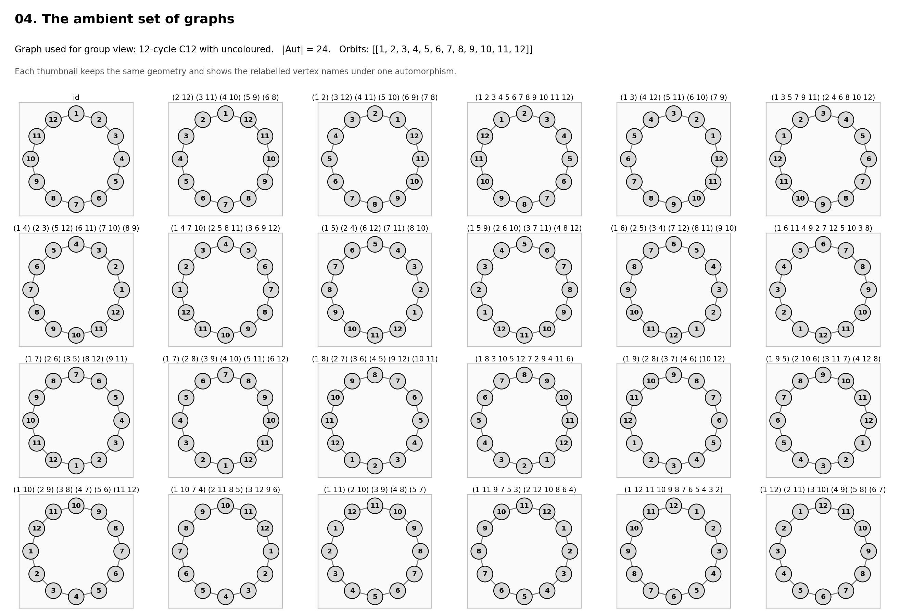
5. What a colouring is
I treat a colouring as an ordered partition. In the example below, vertices $1$ to $4$ form the first cell, vertices $5$ to $8$ the second, and vertices $9$ to $12$ the third.
$$\pi=(\{1,2,3,4\},\{5,6,7,8\},\{9,10,11,12\}),\qquad |\pi|=3.$$
$$P=C_6\square K_2,\qquad |V(P)|=12,\qquad |E(P)|=18,\qquad \deg(v)=3\text{ for all }v.$$
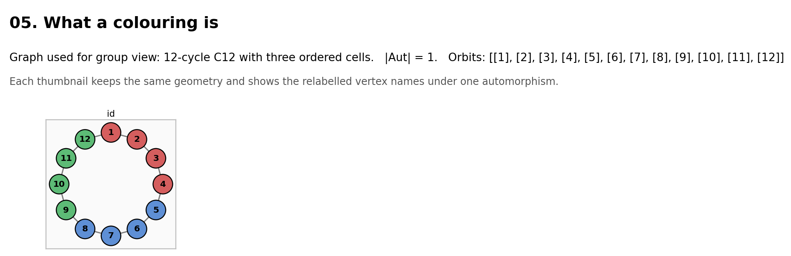
6. The number of colours
For my running partition, the colouring has three cells, so $|\pi|=3$. The important point is that the colour classes are ordered, not merely collected as an unordered family.
$$|\pi|=3,\qquad \pi=(C_1,C_2,C_3).$$
$$P=C_6\square K_2,\qquad |V(P)|=12,\qquad |E(P)|=18,\qquad \deg(v)=3\text{ for all }v.$$
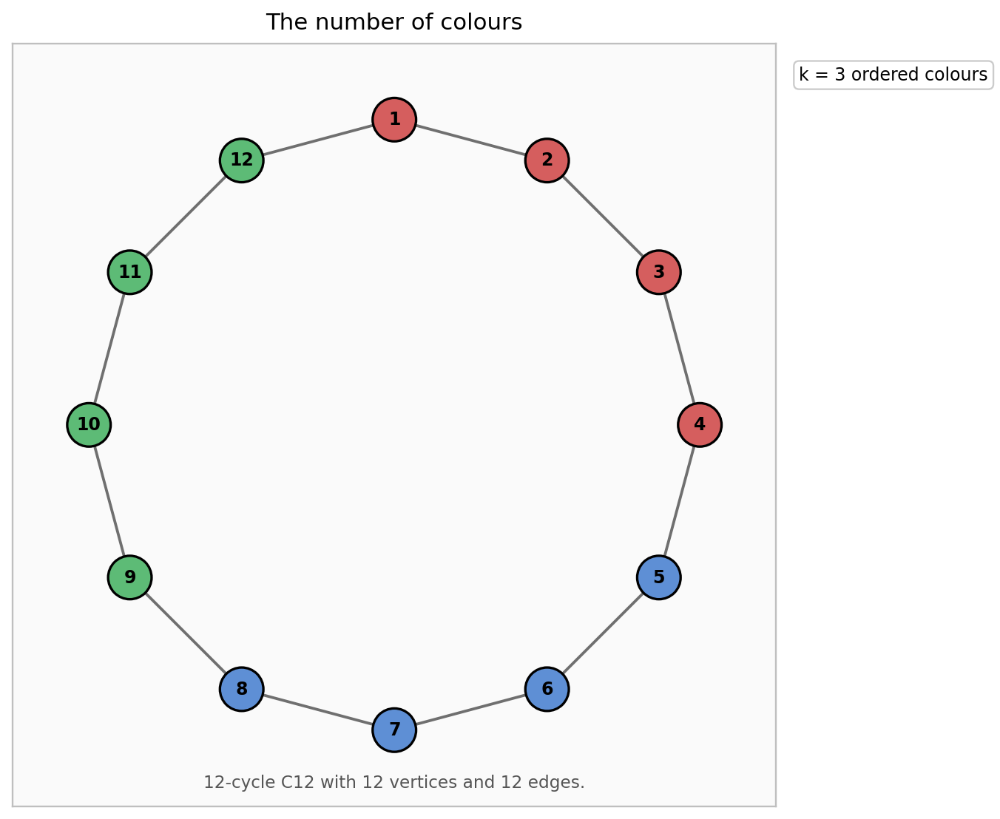
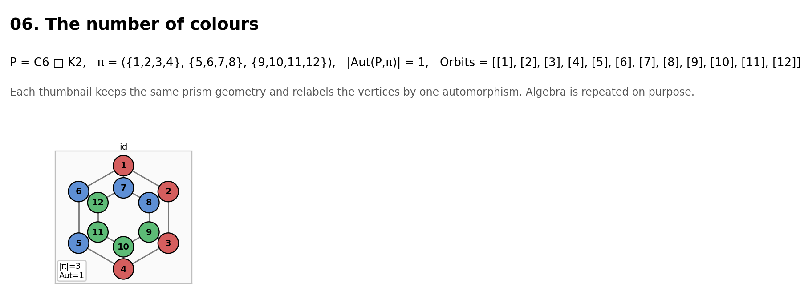
7. What a cell is
In my three-cell example, the middle cell is $C_2=\{5,6,7,8\}$. Thinking cell-by-cell makes refinement much easier to see.
$$C_1=\{1,2,3,4\},\quad C_2=\{5,6,7,8\},\quad C_3=\{9,10,11,12\}. $$
$$P=C_6\square K_2,\qquad |V(P)|=12,\qquad |E(P)|=18,\qquad \deg(v)=3\text{ for all }v.$$
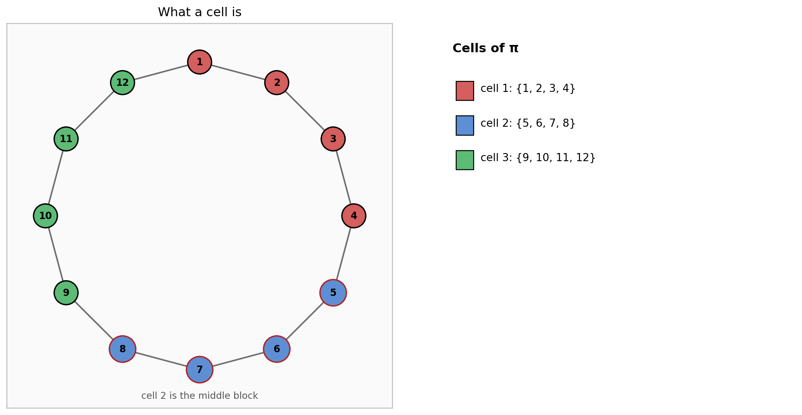
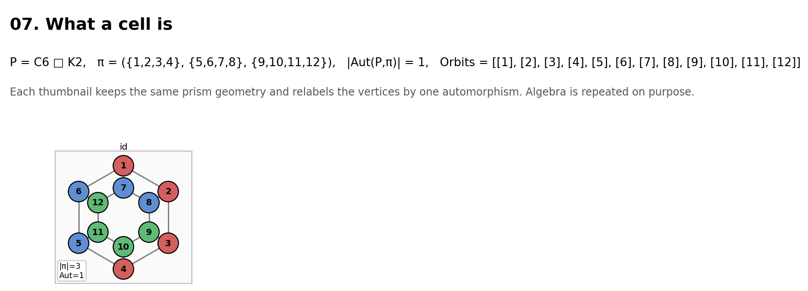
8. Discrete colourings
A discrete colouring removes all ambiguity by isolating every vertex. Once I reach this state, every vertex has its own position in the ordering.
$$\pi_{\mathrm{disc}}=(\{1\},\{2\},\dots,\{12\}),\qquad |\pi_{\mathrm{disc}}|=12.$$
$$P=C_6\square K_2,\qquad |V(P)|=12,\qquad |E(P)|=18,\qquad \deg(v)=3\text{ for all }v.$$
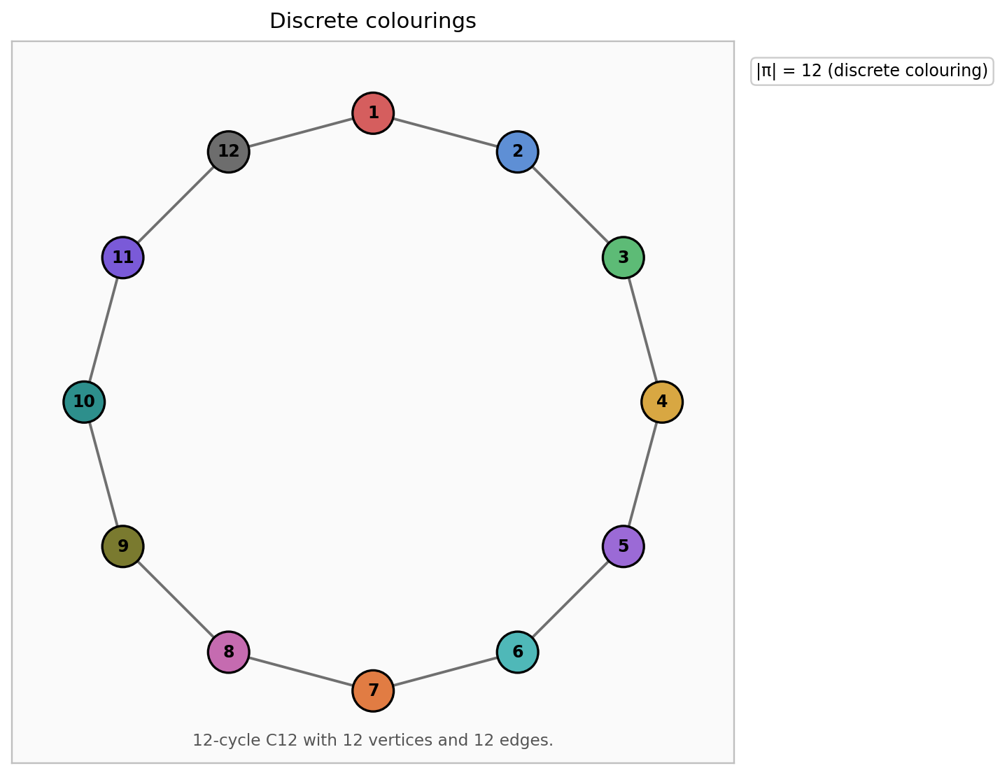
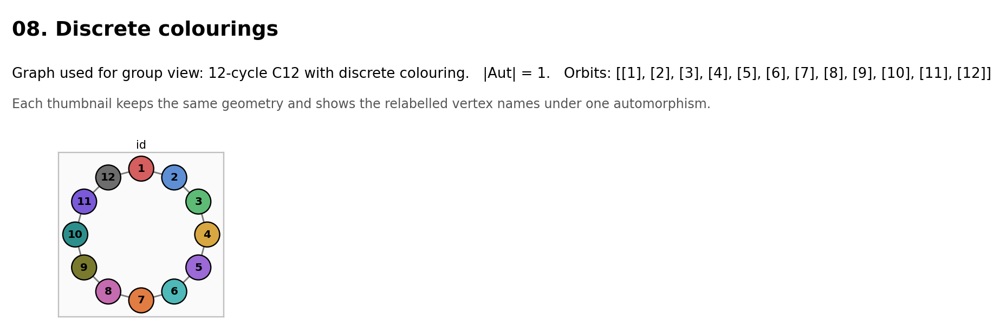
9. Discrete colouring as a permutation
Because each cell is a singleton, I can read the discrete colouring as the ordered list $(1,2,\dots,12)$, or as any relabelled copy obtained by a permutation $g$.
$$g=(1\;4)(2\;5)(3\;6)(7\;10)(8\;11)(9\;12),\qquad G^g ext{ is the same graph with relabelled vertices.}$$
$$P=C_6\square K_2,\qquad |V(P)|=12,\qquad |E(P)|=18,\qquad \deg(v)=3\text{ for all }v.$$
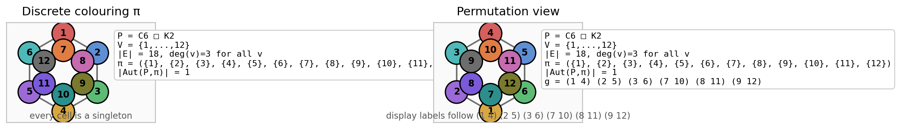
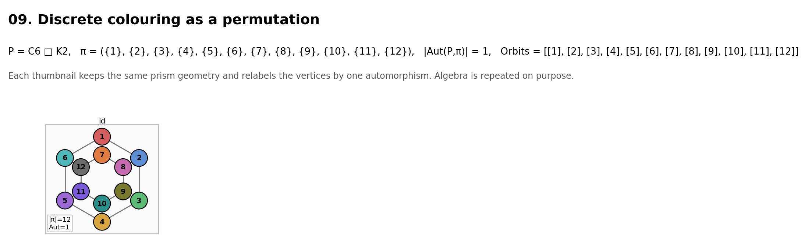
10. Finer than or equal to
I compare a coarse three-cell colouring with a finer five-cell colouring. Every finer cell sits inside one coarse cell, so the order relation is visible directly on the partition boxes.
$$\pi=(\{1,2,3,4\},\{5,6,7,8\},\{9,10,11,12\}),$$ $$\pi'=(\{1,2\},\{3,4\},\{5,6\},\{7,8\},\{9,10,11,12\}),\qquad \pi'\preceq \pi.$$
$$P=C_6\square K_2,\qquad |V(P)|=12,\qquad |E(P)|=18,\qquad \deg(v)=3\text{ for all }v.$$
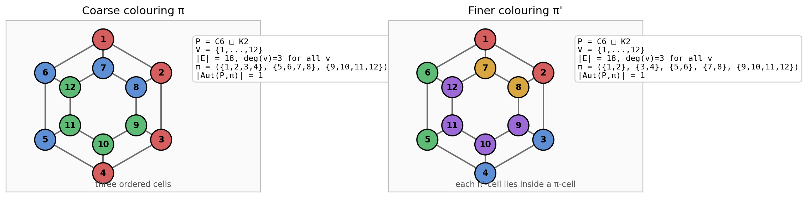
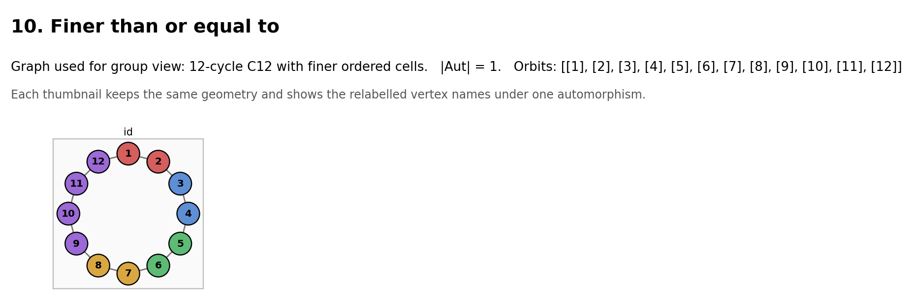
11. Subset intuition for finer colourings
I use the same pair $(\pi',\pi)$ here, but now I stress the subset picture: no finer cell crosses a coarse-cell boundary.
$$\forall C'\in \pi'\;\exists C\in \pi\text{ such that }C'\subseteq C.$$
$$P=C_6\square K_2,\qquad |V(P)|=12,\qquad |E(P)|=18,\qquad \deg(v)=3\text{ for all }v.$$

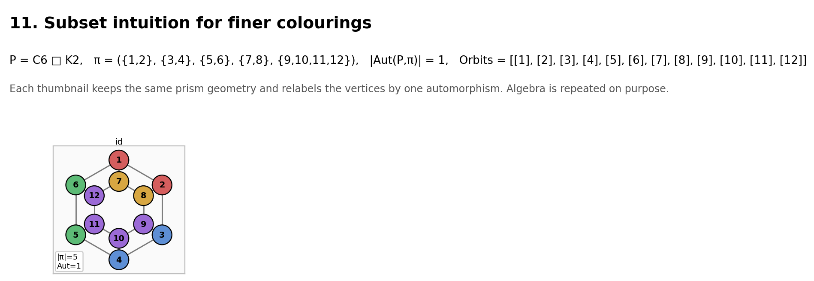
12. Why colourings are also partitions
I keep the partition language visible because it is exactly what I see in the figures. The only caveat is that the cells come with an order.
$$V=\bigsqcup_{i=1}^{|\pi|} C_i,\qquad \pi=(C_1,C_2,\dots,C_{|\pi|}).$$
$$P=C_6\square K_2,\qquad |V(P)|=12,\qquad |E(P)|=18,\qquad \deg(v)=3\text{ for all }v.$$
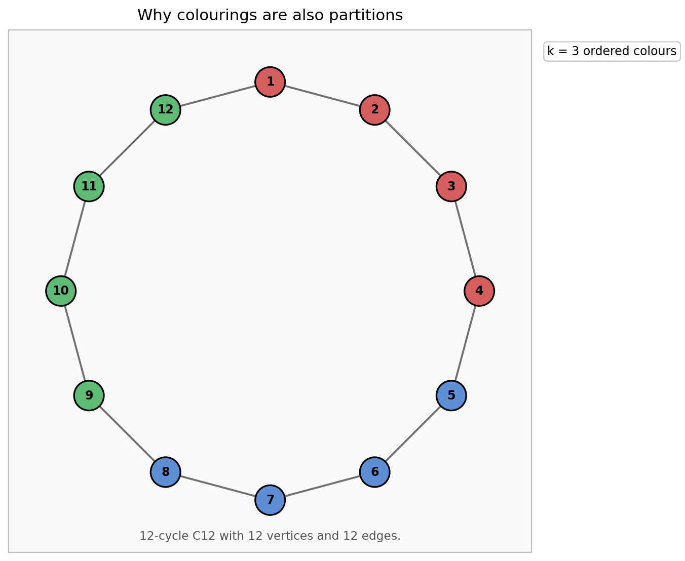
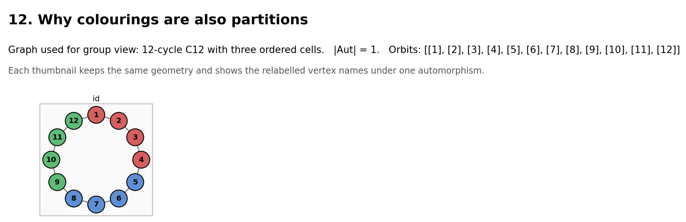
13. Why colour order still matters
Two ordered partitions can have the same underlying blocks and still count as different colourings if I swap the order of the blocks. I make that distinction explicit in the algebra box.
$$\pi=(A,B,C),\qquad \sigma=(B,A,C),\qquad \pi \neq \sigma ext{ as ordered colourings.}$$
$$P=C_6\square K_2,\qquad |V(P)|=12,\qquad |E(P)|=18,\qquad \deg(v)=3\text{ for all }v.$$
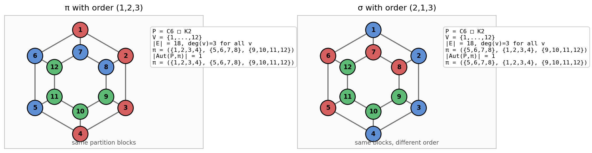
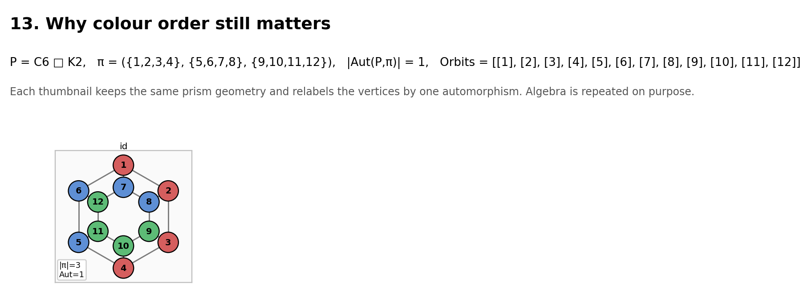
14. What a coloured graph is
From this point on, I frequently work with the pair $(P,\pi)$ rather than with $P$ alone, because the colouring changes which symmetries remain valid.
$$ (P,\pi),\qquad P=C_6\square K_2,\quad \pi=(\{1,2,3,4\},\{5,6,7,8\},\{9,10,11,12\}). $$
$$P=C_6\square K_2,\qquad |V(P)|=12,\qquad |E(P)|=18,\qquad \deg(v)=3\text{ for all }v.$$
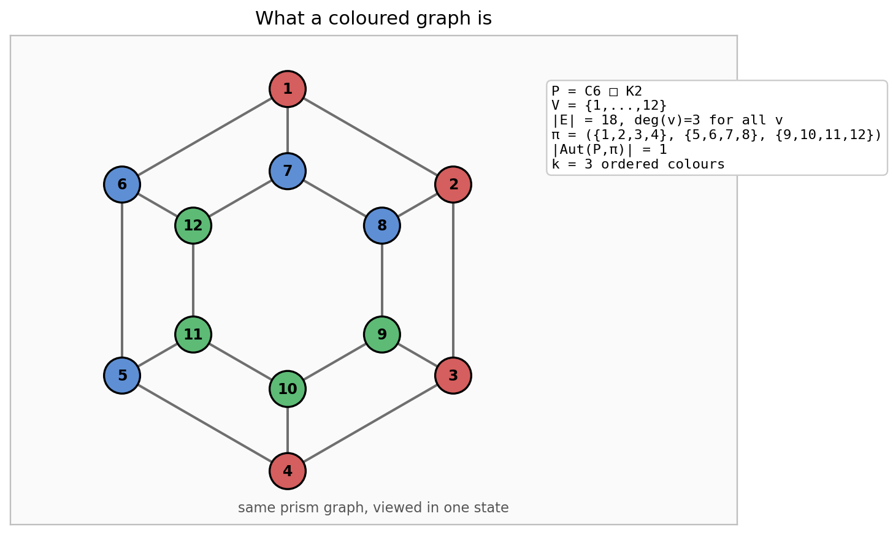
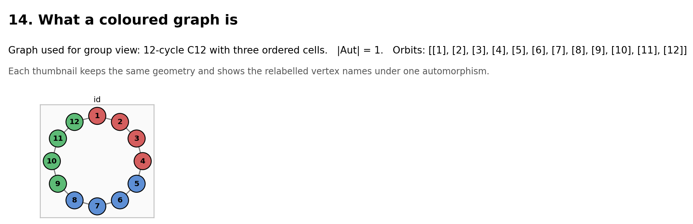
15. The symmetric group
The paper writes $S_n$ for all permutations of the vertex set. I use a specific permutation $\rho$ to make the action visible on the prism graph.
$$\rho=(1\;2\;3\;4\;5\;6)(7\;8\;9\;10\;11\;12)\in S_{12}. $$
$$P=C_6\square K_2,\qquad |V(P)|=12,\qquad |E(P)|=18,\qquad \deg(v)=3\text{ for all }v.$$
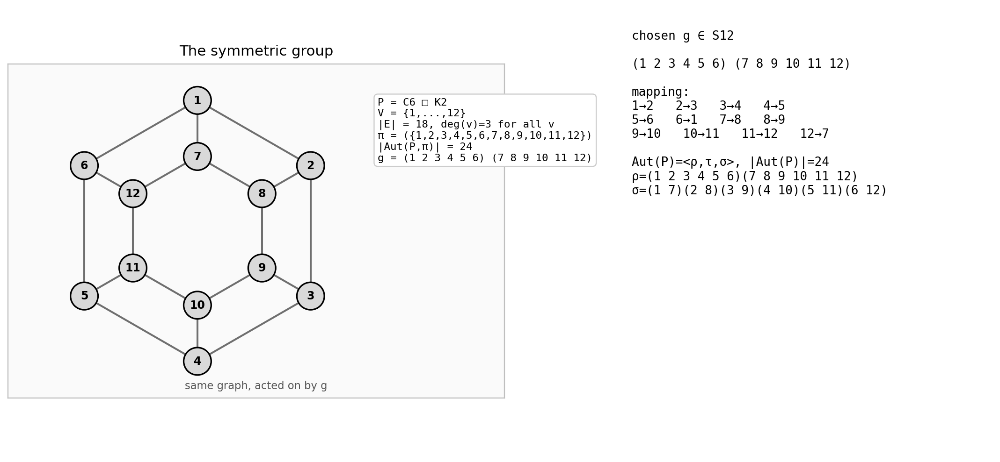
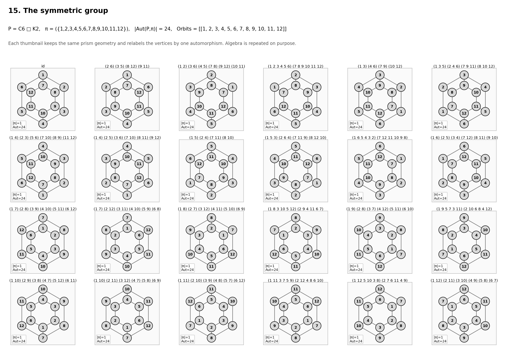
16. Exponent notation for actions
I keep the exponent notation because it matches the paper. For instance, under the rotation $\rho^2$, the vertex $1$ moves to $3$ and the vertex $7$ moves to $9$.
$$1^{\rho^2}=3,\qquad 7^{\rho^2}=9.$$
$$P=C_6\square K_2,\qquad |V(P)|=12,\qquad |E(P)|=18,\qquad \deg(v)=3\text{ for all }v.$$
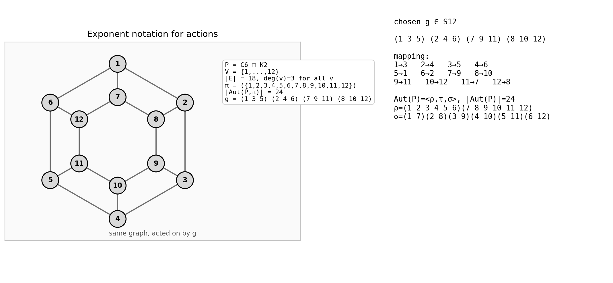
17. Image of a vertex under a permutation
To make the notation concrete, I highlight one vertex and its image. This is the smallest nontrivial example of the action.
$$g=\rho^3,\qquad 1^g=4.$$
$$P=C_6\square K_2,\qquad |V(P)|=12,\qquad |E(P)|=18,\qquad \deg(v)=3\text{ for all }v.$$
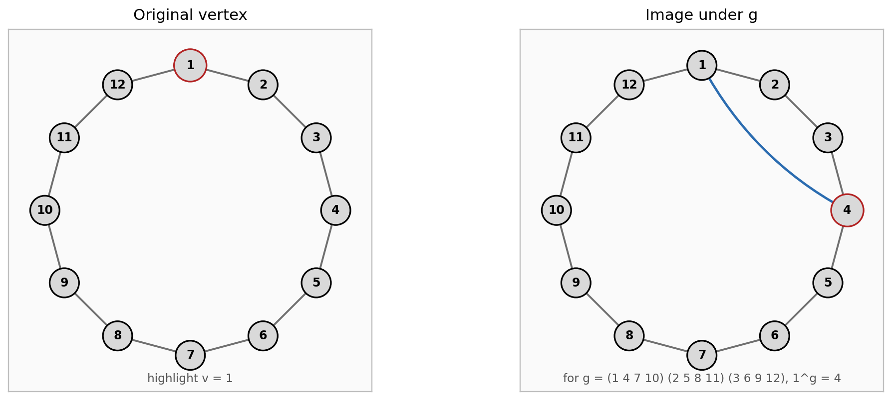
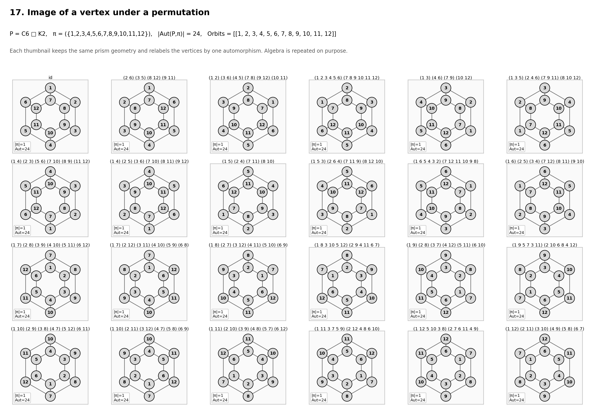
18. Induced action on more complicated objects
Once the vertex action is fixed, everything else follows automatically. Here I show the induced action on a single edge.
$$g=\rho^3,\qquad \{1,2\}^g=\{4,5\}. $$
$$P=C_6\square K_2,\qquad |V(P)|=12,\qquad |E(P)|=18,\qquad \deg(v)=3\text{ for all }v.$$
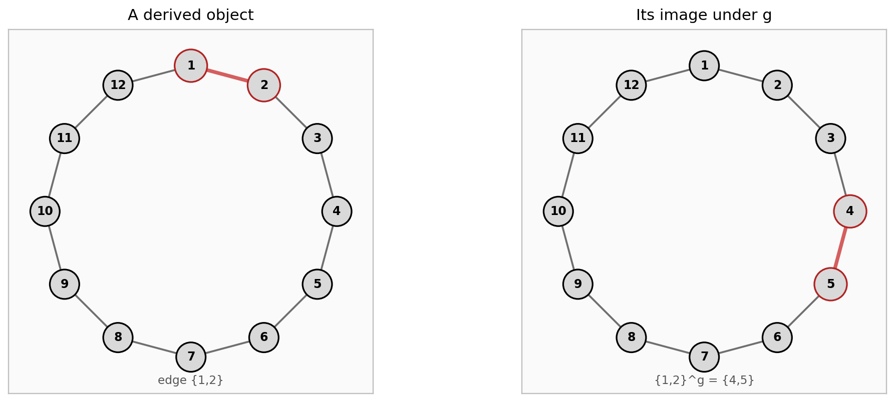
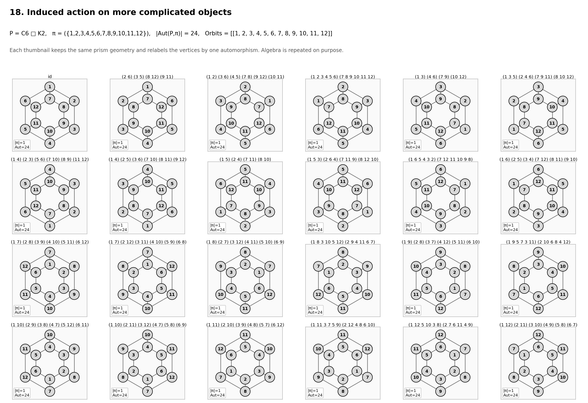
19. Action on subsets
I use the three-vertex set $W=\{1,2,3\}$ so that the image is easy to read in the figure and in the formula at the same time.
$$W=\{1,2,3\},\qquad W^g=\{4,5,6\} ext{ for } g=\rho^3.$$
$$P=C_6\square K_2,\qquad |V(P)|=12,\qquad |E(P)|=18,\qquad \deg(v)=3\text{ for all }v.$$
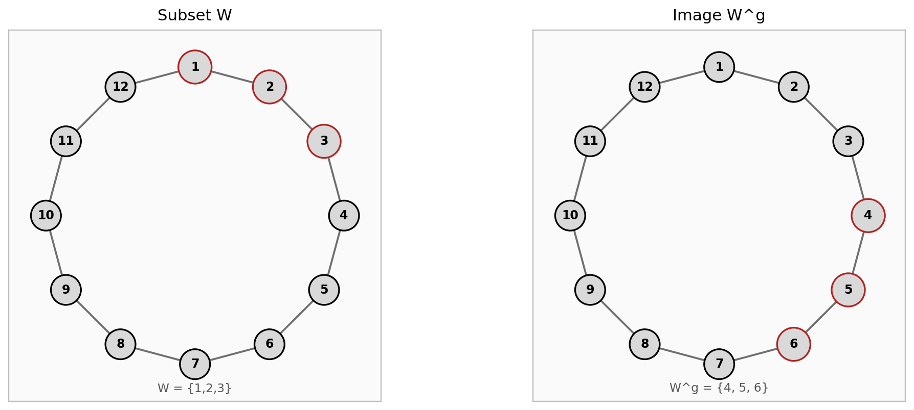
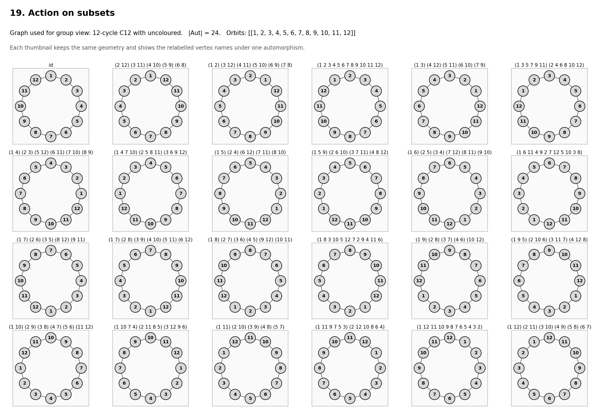
20. Action on graphs
The figure on the right keeps the same geometry but changes the displayed labels. That is exactly the paper’s idea of $G^g$.
$$G^g=(V,E^g),\qquad E^g=\{\{u^g,v^g\}:\{u,v\}\in E\}. $$
$$P=C_6\square K_2,\qquad |V(P)|=12,\qquad |E(P)|=18,\qquad \deg(v)=3\text{ for all }v.$$
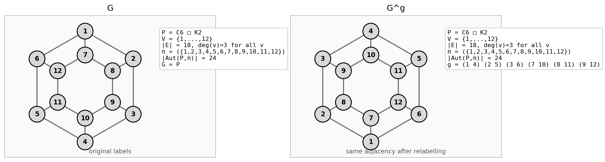
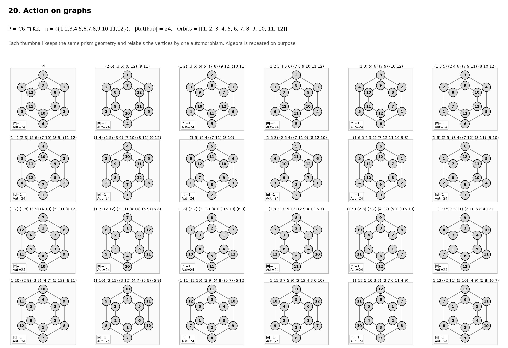
21. Discrete colouring gives G^π
In the discrete case, the colouring itself encodes a vertex order. I use that to read the graph as a relabelled copy $G^\pi$.
$$\pi_{\mathrm{disc}}=(\{1\},\{2\},\dots,\{12\})\quad\leadsto\quad G^{\pi}. $$
$$P=C_6\square K_2,\qquad |V(P)|=12,\qquad |E(P)|=18,\qquad \deg(v)=3\text{ for all }v.$$
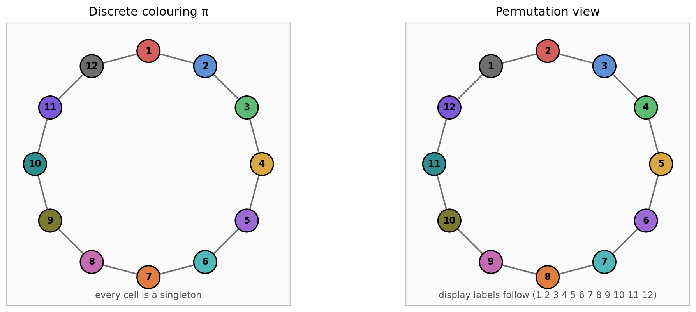
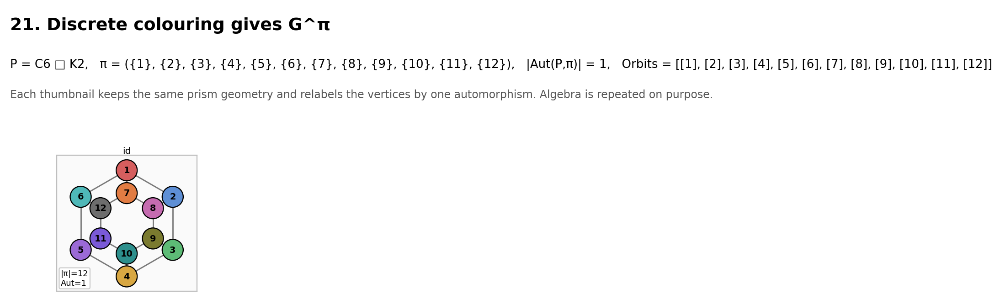
22. Action on colourings
I keep the graph fixed and move only the colour labels through the action. This is where ordered cells become especially important.
$$\pi^g(v)=\pi(v^g).$$
$$P=C_6\square K_2,\qquad |V(P)|=12,\qquad |E(P)|=18,\qquad \deg(v)=3\text{ for all }v.$$
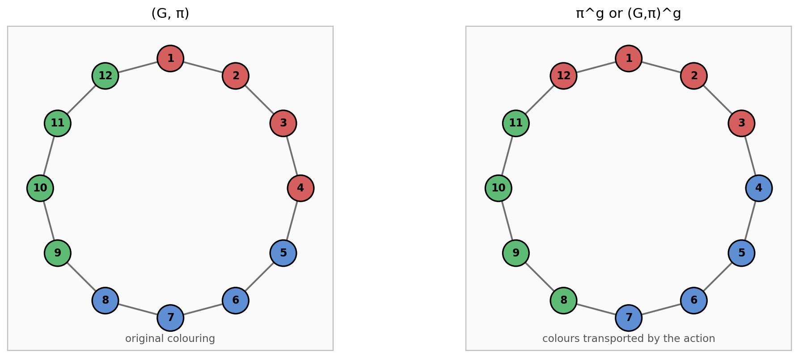
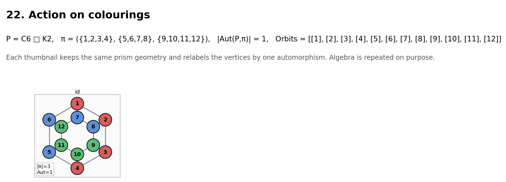
23. Action on coloured graphs
The ordered pair notation makes this compact: the permutation acts simultaneously on the adjacency structure and on the colouring.
$$ (G,\pi)^g=(G^g,\pi^g). $$
$$P=C_6\square K_2,\qquad |V(P)|=12,\qquad |E(P)|=18,\qquad \deg(v)=3\text{ for all }v.$$
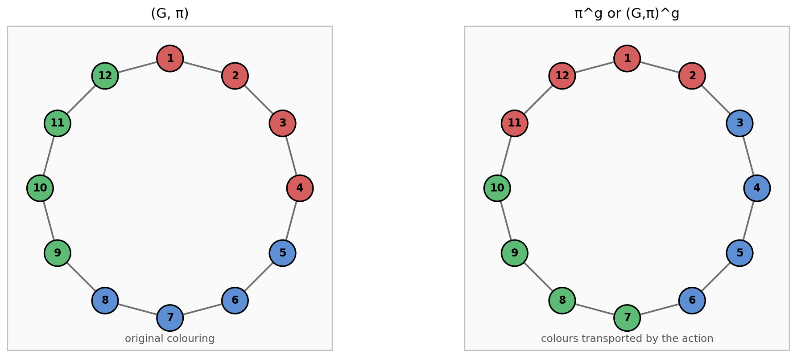
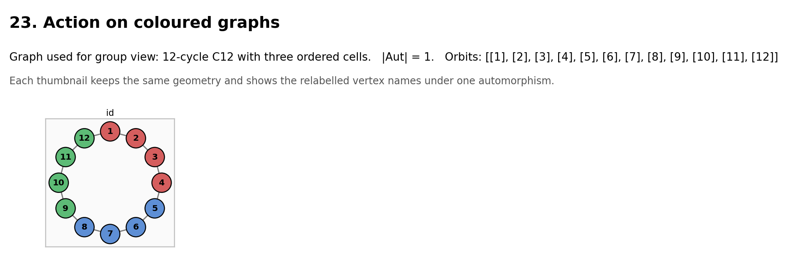
24. Isomorphism of coloured graphs
In the figure pair I use the same prism graph with two differently displayed labelings. The algebra says that a suitable $g$ carries one coloured graph onto the other.
$$ (G,\pi)\cong (G',\pi') \iff \exists g\in S_{12} \text{ such that } (G',\pi')=(G,\pi)^g. $$
$$P=C_6\square K_2,\qquad |V(P)|=12,\qquad |E(P)|=18,\qquad \deg(v)=3\text{ for all }v.$$
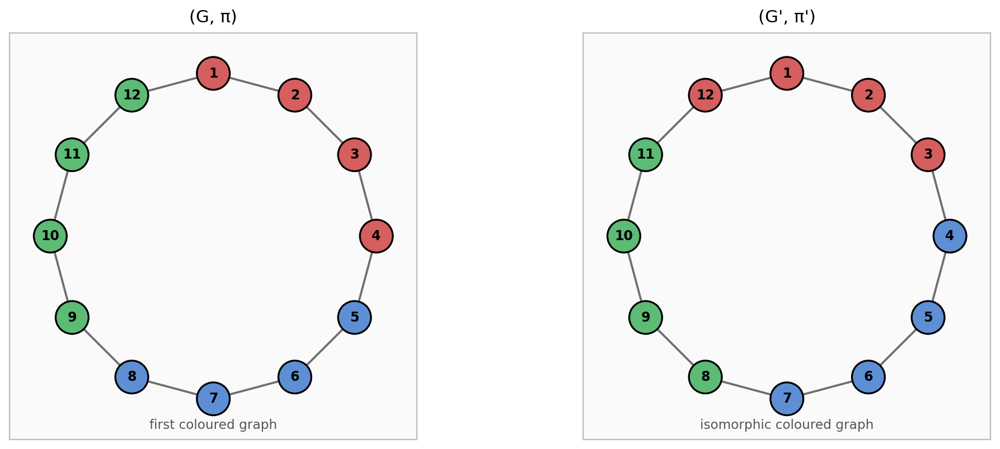
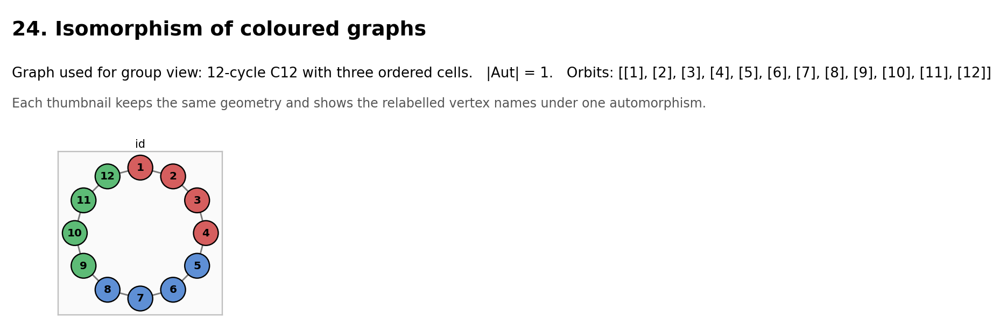
25. What the isomorphism itself is
I find it useful to keep the witness map visible, because the paper’s abstract statement is really about this concrete relabelling.
$$g:(G,\pi)\to(G',\pi'),\qquad g ext{ is the actual isomorphism.}$$
$$P=C_6\square K_2,\qquad |V(P)|=12,\qquad |E(P)|=18,\qquad \deg(v)=3\text{ for all }v.$$
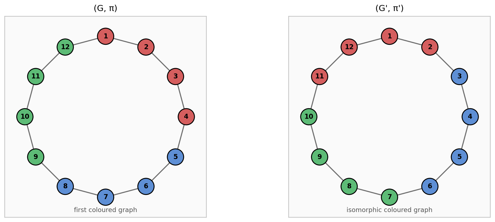
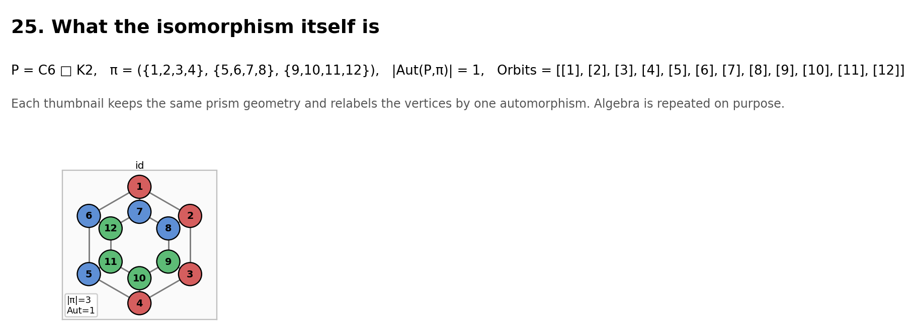
26. Automorphism group
For the uncoloured prism graph, I recover 24 automorphisms. The thumbnails collect them into one place so the group feels concrete rather than symbolic.
$$\mathrm{Aut}(P)=\langle \rho,\tau,\sigma\rangle,\qquad |\mathrm{Aut}(P)|=24,$$ $$\rho^6=\tau^2=\sigma^2=1,\qquad \tau \rho \tau = \rho^{-1},\qquad [\sigma,\rho]=[\sigma,\tau]=1.$$
$$P=C_6\square K_2,\qquad |V(P)|=12,\qquad |E(P)|=18,\qquad \deg(v)=3\text{ for all }v.$$
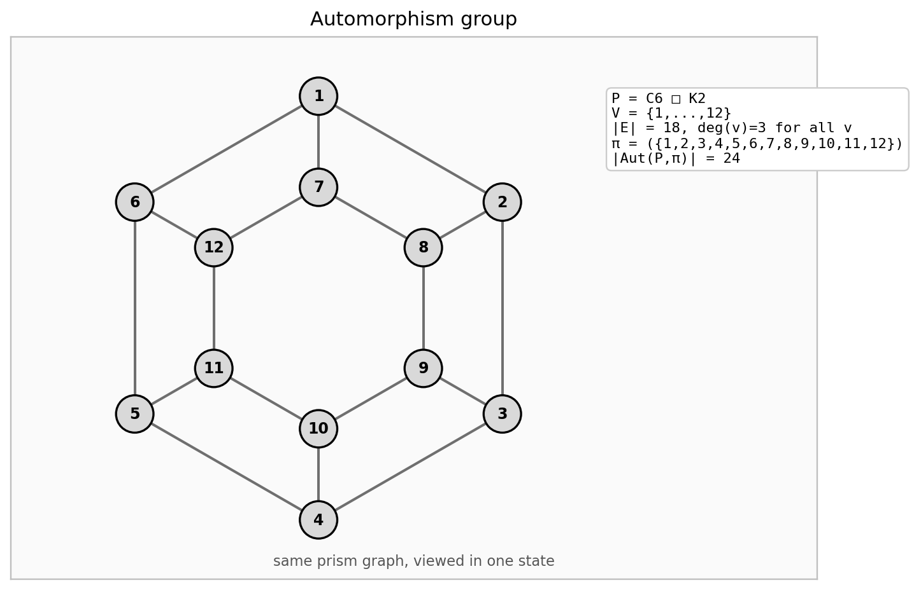
27. Canonical form
I present the canonical form as a selection rule. Among all relabelled copies of a coloured graph, I choose the one whose colour sequence is lexicographically smallest.
$$C(G,\pi)=\min_{g\in \mathrm{Aut}(P)} (G^g,\pi^g)\quad ext{under my chosen ordering rule.}$$
$$P=C_6\square K_2,\qquad |V(P)|=12,\qquad |E(P)|=18,\qquad \deg(v)=3\text{ for all }v.$$
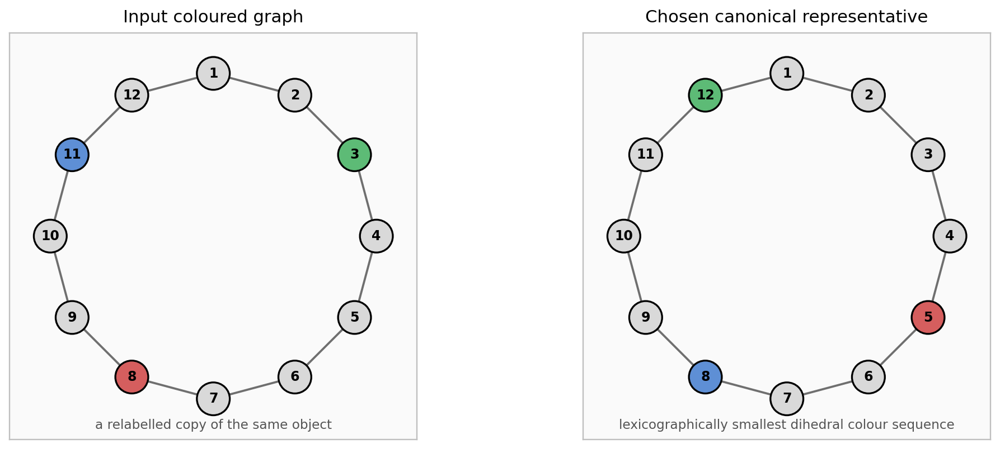
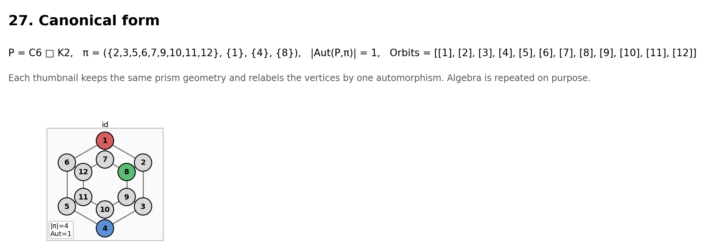
28. Unique representative of the class
The two figures start from two different copies, but the third figure shows the same canonical representative for both. This is the paper’s uniqueness idea in one glance.
$$C(G,\pi)=C(G',\pi') ext{ whenever } (G,\pi)\cong(G',\pi').$$
$$P=C_6\square K_2,\qquad |V(P)|=12,\qquad |E(P)|=18,\qquad \deg(v)=3\text{ for all }v.$$
29. Why canonical forms solve comparison
This is the pay-off. Once I can compute a canonical form, I can replace a search for some hidden isomorphism by a direct comparison of two outputs.
$$ (G,\pi)\cong(G',\pi') \iff C(G,\pi)=C(G',\pi'). $$
$$P=C_6\square K_2,\qquad |V(P)|=12,\qquad |E(P)|=18,\qquad \deg(v)=3\text{ for all }v.$$